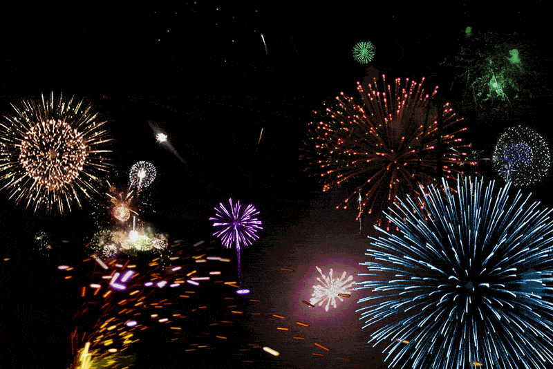

Етот сайтик сделан специально для тебя,
солнышко
Привет, солнышко! Этот сайтик посвящён тому, какая ты у меня холошая и самая-самая-самая лучшая ❤ (лучше смотреть с телефона, на компутири всё съезжает)
Я бесконечно рад, что в моей жизни появилась такая лапушка, как ты, любимая!
Ты самая-самая-самая лучшая на свете, и я хочу прожить с тобой всю свою жизнь ❤
С тобой я чувствую себя по-настоящему хорошо, кисонька ❤
Ты делаешь каждый мой день самым лучшим, а меня - самым счастливым человечком на свете ❤❤❤
Спасибо за то, что появилась в моей жизни, любимая ❤
Я люблю тебя выше звёздочек ❤❤❤
В честь такого праздника я подготовил маленький рассказ о том, как мы познакомились и как общались дальше ❤
Познакомились мы с тобой в музыкальной школе, именуемой в документах ДШИ. В то время мы были ещё маленькими и выглядели по-другому.
Но всё равно ты уже тогда была самой красивой в мире
Познакомились мы на таком уроке, как хор. Там вы с Софой решили найти новую жертву для выноса мозга.
Но ты явно не ожидала, что жертва тоже будет с подвохом, и вместо того, чтобы разово вынести мне мозг, я теперь выношу его тебе постоянно❤
В следующий раз мы начали общаться только через несколько лет, когда я уже переехал в рэб, перевёлся в лицей и познал суровую жизнь рэбоского пацана.
Суровая РЭБОднажды я ехал с лицея домой на единичке и решил выйти на Лене, потому что по времени скоро должен был отъезжать рэбовский. Выходя я заметил, что такая красавица собирается ехать дальше, а покидать её мне совсем не хотелось.
Та самая красавицаЯ спросил тебя: "Почему ты не выходишь сейчас?", ты ответила: "А зачем?", я сказал, что пятёрка скоро отъедет и можно будет доехать на автобусе, а не идти пешком через мост. Ты согласилась и пошла со мной. Так началось наше общение❤
То самое место, где останавливается пятёркаЯ часто начал подходить к тебе на перемене и спрашивать, сколько у вас ещё уроков, чтобы вместе поехать домой.
С тобой было весело ехать до дома, всегда разговаривали о чём-то таком, что для нас было жизненным и с тобой было приятно общаться потому, что ты
понимала меня, как никто другой, и мои дурацкие шуточки не отталкивали тебя.
Так мы вместе проездили всю зиму. И однажды весной была суббота, мало уроков, и я решил написать тебе уже из речников и спросить, ждать ли тебя.
Ты ответила, что если хочу, и я решил ждать тебя
Уже тогда я понимал, что ты не такая как все, потому что отношение ко мне у тебя было немного другое, нежели у остальных девочек. В отличие от остальных, ты заботилась обо мне даже учитывая то, что мы совсем мало общались
Буквально через несколько секундПриехала ты довольно быстро, но пока я ждал тебя у меня спиздили телефон
Но это уже совсем другая историяНе знаю, как могла бы пойти эта история дальше, если бы не ты. Благодаря тебе всё закончилось хорошо: я несколько раз проебал физику, которую всем сердцем
не любил; потусил в суде и мне всё-таки вернули телефон! Этого могло и не быть, если бы ты не позвонила в полицию и не помогла опознать преступника ❤
Сначала ты, конечно, не верила, что мой телефон кому-то кроме меня нужен, но что-то пошло не так, и его всё-таки технично отжали
С того момента мы много переписывались (я, конечно, писал тебе только когда был дома), и было много разных забавных и милых моментиков ❤
Пару раз, дада ❤Прошло много времени, мы общались всё чаще, и даже дошло до всякого рода признаний
Ещё больше приколов ❤
Так проходили денёчки, мы всё чаще ходили гулять, признавались друг другу, шо мы лучшие дружочки-пирожочки. И через некоторое время я понял,
что хочу быть больше, чем дружочком и супер-пупер дружочком ❤
Я дико боялся как-либо накосячить, старался заботиться о тебе, один раз у меня даже получилось заплатить за тебя в магазине!!! После каждой прогулки мне всё
больше не хватало тебя, я хотел быть с тобой постоянно. Потом произошёл троллинг и моё сердечко радовалось, что хотя бы так, хотя бы так странно, но всё же
я могу сказать, что люблю тебя
Твои поздравления самые лучшие на свете, т.к. последние были не так давно и их мы помним, я покажу самое первое ❤
Такое мимими ❤Мы всё чаще гуляли и как оказалось потом, я хорошо справлялся, шо я начал тебе нравится и ты мне потом сказала, что уже тогда я был "очень очень"
Потом ты уехала и мы стали реже общаться. В следующий раз я написал только на твой день рождения с поздравлением и с того момента мы начали общаться усиленнее.
Я уже не скрывал, что я люблю тебя, и даже спрашивал, есть ли у меня шансы быть твоим парнем, на что ты отвечала, что шансы есть всегда, главное ими воспользоваться.
Мы общались всё чаще и чаще. Я даже впервые не спал сутки, потому что всё это время был с тобой
❤
Времечко шло, мы всё чаще общались, дошло до того, что это было постоянно. Мне нравилось так жить, но чего-то не хватало. Мы много сюсюкались, и однажды, в 6 утра
12 декабря, в субботу, я решился на самый отчаянный шаг.
Шо ето я, я же могу вставить по-нормальному
 Гифки с Юлей у меня слава богу нет
Гифки с Юлей у меня слава богу нет
С того момента мы стали парочкой, и могли с гордостью говорить "Она у меня такая милая" и "Капец он дурак, ну как обычно в общем". Я был очень рад этому и остаюсь рад до сих пор! Единственное, чего я боялся, что будет как у Дениса с Алиной по типу "Бля, как Алина заебала уже обижаться, ну вот сейчас же я ничего такого не сделал, ну подумаешь опоздал", но либо у них что-то пошло не так, либо мы с тобой самые лучшие (естественно, что за глупые рассуждения), но пока что если я кому-либо и говорю про тебя, то это обычно "Бозетьки она у меня такая милая, ну Лёня просто посмотри, ну такая мимими, такая заботливая" и в ответ я обычно получаю "Вы самая милая парочка, которую я когда-либо видел", ну от всех кроме Дениса, конечно. Для него самая милая парочка ето он и Алина.
Конечно, не обошлось у нас и без ссор, не всё же время нам сюсюкаться. Мы обижались, резко отвечали друг другу, но даже тогда мы не обзывали друг друга.
Были и срывчики, было тяжело, грустно, обидно, но всё это мелочи по сравнению с тем, как мы любим друг друга ❤
Все обиды не бесконечные, рано или поздно мы перестаём обижаться и каждый раз миримся. Не спорю, был бы я умнее - меньше бы косячил и меньше бы ссорились.
Я стараюсь становиться лучше ради тебя, любимая, честно. Я дорожу тобой больше, чем всем, что у меня есть кроме тебя ❤ Но ето всё не отменяет мою
тупость, извини. Часто я бываю злым, заносчивым, обидчивым. Прости. Я не буду оправдываться, ты всё и так знаешь, всем нам тяжело. Но я хочу чтобы ты знала
– я люблю тебя больше всего на свете, больше жизни, выше звёздочек ❤
Я бесконечно счастлив лишь только с тобой, заюшка ❤
И я хочу провести всю свою жизнь только с тобой, родная ❤
Ты возразишь, а как же наша конфетка? С ней я чтоли не хочу провести всю жизнь? Конечно же хочу, солнышко! Просто если подумать, то ты её родишь - потратишь свои
силы, она будет частью тебя, буквально сделана из тебя в какой-то степени. Поэтому говоря, что я хочу провести всю свою жизнь лишь с тобой, я имею ввиду не только тебя,
но и наших заек ❤
Я люблю тебя, кисонька ❤ Ты самая-самая-самая лучшая в мире ❤❤❤ Спасибо тебе за всё всё всё ❤ Без тебя этого ничего бы не было ❤❤❤
Люблю тебя и хочу быть с тобой всю жизнь, солнышко ❤
 Самая милая зайка на свете ❤
Самая милая зайка на свете ❤